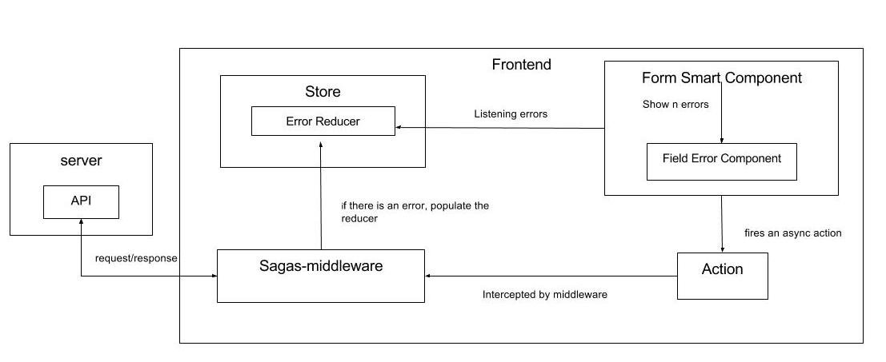

Manage asynchronous errors with React and Formik
In this posts, I want to show you one approach to manage errors when we perform asynchronous actions with React.js
Just to remember, I am using the architecture that I commented on my previous post Creating your own framework with React
I've tried several forms libraries in React and one that has accomplished most of the requirements is Formik. It does not have several issues, the repository is updated quite often, the community is active, and in my case, It was clear how to use it.
Architecture
This is the architecture that I've decided to use:

One important thing is we have only one reducer (Error Reducer) to store all the errors related to the forms that we have in our project. Also, there is a FieldError component that knows how to show the errors.
Let's write code:
Our Form Smart Component with Formik
import React from 'react'; import { Field, Formik } from 'formik'; import FieldError from '../../../components/FieldError'; class LoginForm extends React.Component { constructor(props) { super(props); this.initialValues = { email: '', password: '', }; } render() { return ( <Formik initialValues={this.initialValues} onSubmit={(values, options) => { this.props.handleSubmit(values) }} render={(props) => { return <form onSubmit={props.handleSubmit} > <label htmlFor="email">Email</Label> <input type="email" name="email" id='email'required/> <FieldError errors={this.props.errors.email} /> <label htmlFor="password">Password:</label> <input type="password" name="password" id='password' required/> <button type="submit">Login</button> </form> }} /> ) } } export default LoginForm
Our FieldError component
import React from 'react'; import PropTypes from 'prop-types'; class FieldError extends React.Component { static propTypes = { errors: PropTypes.array, globalInForm: PropTypes.bool }; static defaultProps = { errors: [], globalInForm: false } render() { let errors = this.props.errors.map((error, key) => ( <p className="error text-danger" key={key}>{error}</p> )) if (errors.length && this.props.globalInForm){ return ( <div color="danger"> <ul>{errors}</ul> </div> ) } return ( <div> {errors} </div> ) } } export default FieldError
Our Error Reducer
import actionTypes from '../actions/actionTypes'; const initialState = { formErrors: [], globalErrros: [], messages: [] } export default function reducer(state=initialState, action) { switch (action.type) { case actionTypes.ADD_FORM_ERRORS: return { ...state, formErrors: action.payload.errors, } case actionTypes.RESET_FORM_ERRORS: return { ...state, formErrors: [], } default: return state } }
Sagas funtions
import { takeEvery } from 'redux-saga'; import { call, put } from 'redux-saga/effects'; import actionTypes from '../actions/actionTypes'; import api from '../../api'; function * login(action) { try{ const response = yield call(api.login, action.payload.data, ); yield put({ type: actionTypes.LOGIN_SUCCESSFUL, payload: response }) yield put({ type: actionTypes.RESET_FORM_ERRORS }); } catch(response) { yield put({ type: actionTypes.ADD_FORM_ERRORS, payload: {errors: response.errors} }); } } export function * userSagas() { yield [ takeEvery(actionTypes.LOGIN_REQUESTED, login) ] }
Linking Error Reducer with our Form and actions
import { connect } from 'react-redux' import LoginForm from './components/LoginForm'; import { login } from '../../store/actions'; const mapStateToProps = (state) => { return { errors: state.errorReducer.formErrors } } const mapDispatchToProps = (dispatch) => { return { login: (data) => { dispatch(login(data)) } } } const LoginContainer = connect( mapStateToProps, mapDispatchToProps )(LoginPage) export default LoginContainer
In the above code, we can observe that the form component have access to a portion of the store (error Reducer), also when the form is submitted the login action is dispatched.
Important thngs:
Is important to know the response format that comes from the server. In our case the expected format is:
{ 'field_1': [ 'error_1', 'error_2' ], 'field_2': [ 'error__1', 'error_2' ] }
So, our Form will have access to the above error object, and then will pass each array to the FieldError component to show them.
<FieldError errors={this.props.errors.email} />
If there is no error in the response, we should clean the reducer because the same reducer is used by multiple forms.
Another thing is when the user refresh the page, we also should clean the ErrorReducer, otherwise, the errors will be there and can cause confusion.
The flow:
- User fill the form and press submit (login function is called).
- Because is an async action, the sagas middleware catch it, and send a request to the backend.
- The server has responded with an error e.g. 400.
- The errors are registered in the Error Reducer by sagas.
- The form is listening to the Error Reducer and have access to it.
- The errors are shown in the form.
Conclusion:
Showing async errors is not an easy task in React, but after a clear workflow was established and the structures to play (Reducer and FieldError) have been created showing errors becomes easier.
Also, I've seen the approach of creating one Reducer per Form, in our case LoginForm Reducer belongs to the login form, RegistrationForm Reducer to Registration Form, etc. Maybe is a good approach to have a better control of each form but the amount of reducer increase considerably.
Comments
Comments powered by Disqus